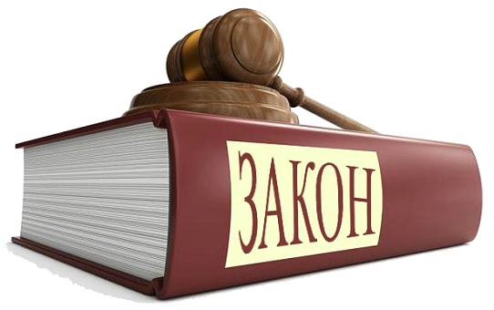

Ваши права по закону.
ЗАДЕРЖАННЫЙ ИМЕЕТ ПРАВО:
- ЗНАТЬ О ПРИЧИНЕ СВОЕГО ЗАДЕРЖАНИЯ
"Подозреваемый вправе знать, в чем он подозревается, и получить копию постановления о возбуждении против
него уголовного
дела, либо копию протокола задержания, либо копию постановления о применении к нему меры пресечения" (п.1
ч.4 ст.46 УПК РФ).
- НА НЕМЕДЛЕННОЕ УВЕДОМЛЕНИЕ СВОИХ РОДСТВЕННИКОВ О ЗАДЕРЖАНИИ
"По просьбе задержанного лица о месте его нахождения в кратчайший срок уведомляются родственники,
администрация по месту его работы (учебы), а также защитник (ч.3 ст.27.3. КоАП). "Дознаватель, следователь
или прокурор уведомляет кого-либо из близких родственников, а при их отсутствии - других
родственников или предоставляет возможность такого уведомления самому подозреваемому" (ч.1 ст.96 УПК).
Однако УПК допускает изъятия из этого правила:
"При необходимости сохранения в интересах предварительного расследования в тайне факта задержания
уведомление с санкции
прокурора может не производиться, за исключением случаев, когда подозреваемый является несовершеннолетним
(ч.4 ст.96 УПК).
- НА УЧАСТИЕ АДВОКАТА С МОМЕНТА ЗАДЕРЖАНИЯ
"Каждый задержанный, заключенный под стражу, обвиняемый в совершении преступления имеет право пользоваться
помощью
адвоката (защитника) с момента соответственно задержания, заключения под стражу или предъявления обвинения"
(ч.2 ст.48
Конституции РФ).
- НЕ ДАВАТЬ ПОКАЗАНИЯ ПРОТИВ СЕБЯ И СВОИХ РОДНЫХ
"Никто не обязан свидетельствовать против себя самого, своего супруга и близких родственников" (ч.1 ст.51
Конституции
РФ).
- НА СВОБОДУ ОТ ПЫТОК
"Никто не должен подвергаться ни пыткам, ни бесчеловечному или унижающему достоинство обращению или
наказанию" (ст.3
Конвенции о защите прав человека и основных свобод).
"Милиции запрещается прибегать к пыткам, насилию, другому жестокому или унижающему человеческое достоинство
обращению"
(ч.2 ст.5 Закона РФ "О милиции").
- НА ПОЛУЧЕНИЕ ПОМОЩИ МЕДИЦИНСКОГО РАБОТНИКА
"Лица, задержанные, заключенные под стражу имеют право на получение медицинской помощи за счет средств
соответствующих
бюджетов всех уровней" (ч.1 ст. 29 Основ законодательства РФ об охране здоровья граждан).
- НА СОБЛЮДЕНИЕ СРОКОВ ЗАДЕРЖАНИЯ
"Арест, заключение под стражу и содержание под стражей допускается только по судебному решению. До судебного
решения
лицо не может быть подвергнуто задержанию на срок более 48 часов" (ч.2 ст.22 Конституции РФ).
"Срок административного задержания не должен превышать три часа" (ч.1 ст.27.5 КоАП).
"Лицо, в отношении которого ведется производство по делу об административном правонарушении, влекущем в
качестве
одной
из мер административного наказания административный арест, может быть подвергнуто административному
задержанию на
срок
не более 48 часов"(ч.3 ст.27.7.КоАП).
- ЗНАТЬ, ЧТО ЗАПИСАНО В ПРОТОКОЛАХ И ДРУГИХ МАТЕРИАЛАХ ДЕЛА. ПРИ НЕСОГЛАСИИ - ВНЕСТИ СВОИ ВОЗРАЖЕНИЯ И
УТОЧНЕНИЯ
ИЛИ
ОТКАЗАТЬСЯ ОТ ПОДПИСИ
" должностные лица обязаны обеспечить каждому возможность ознакомления с документами и материалами,
непосредственно
затрагивающими его права и свободы" (ч.2 ст.24 Конституции РФ).
"Физическому лицу должна быть представлена возможность ознакомления с протоколом об административном
правонарушении.
Указанные лица вправе представить объяснения и замечания по содержанию протокола, которые прилагаются к
протоколу" (п.4 ст.28.2. КоАП). "Подозреваемый вправе знакомится с протоколом следственных действий,
произведенных с его участием, и подавать на них замечания" (п.8 ч.4 ст.46 УПК).
- НА ОБЖАЛОВАНИЕ ЛЮБЫХ ДЕЙСТВИЙ ДОЛЖНОСТНЫХ ЛИЦ
"Гражданин вправе обратиться с жалобой на действия (решения), нарушающие его права и свободы, либо
непосредственно в суд, либо к вышестоящему государственному органу, должностному лицу, государственному
служащему" (ст.4
Закона РФ "Об обжаловании в суд действий и решений, нарушающих права и свободы граждан", ст.254 ГПК).

Доказательства
Согласно действующему уголовно-процессуальному законодательству, а именно ст. 74 УПК РФ
"Доказательства"
- Доказательствами по уголовному делу являются любые сведения, на основе которых суд, прокурор, следователь,
дознаватель в порядке, определенном настоящим Кодексом, устанавливает наличие или отсутствие обстоятельств,
подлежащих
доказыванию при производстве по уголовному делу, а также иных обстоятельств, имеющих значение для уголовного
дела.
-
В качестве доказательств допускаются:
- показания подозреваемого, обвиняемого;
- показания потерпевшего, свидетеля;
- заключение и показания эксперта;
- вещественные доказательства;
- протоколы следственных и судебных действий;
- иные документы.